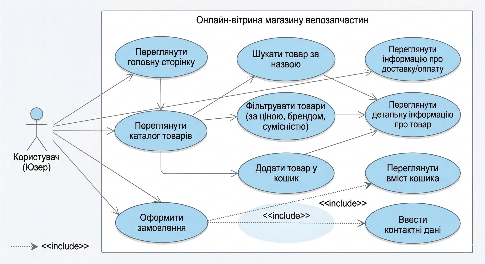

Міністерство освіти і науки України
КПІ ім. Ігоря Сікорського
Факультет Інформатики та Обчислювальної Технiки
Лабораторна робота № 1
з дисципліни «WEB-орієнтовані технології. Backend розробки»
Вибір предметної області. Аналіз, моделювання та розроблення адаптивного WEB-застосунку
Київ 2026
Мета
Сформулювати ключові складові опису інформаційної системи: актуальність, мету та завдання, об'єкт і предмет роботи, практичне значення, функціональні та нефункціональні вимоги, Use-case та ER-діаграми.
На основі досвіду розроблення адаптивного інтерфейсу створити веб-застосунок з використанням сучасних засобів верстки, для забезпечення коректного відображення на різних пристроях.
1. Завдання роботи
- Проаналізувати предметну область роздрібної торгівлі специфічними технічними товарами (велозапчастини).
- Спроектувати структуру бази даних для зберігання інформації про товари, категорії та замовлення.
- Розробити архітектуру адаптивного веб-інтерфейсу, що коректно відображається на десктопах, планшетах та смартфонах.
- Реалізувати функціонал фільтрації товарів за технічними характеристиками.
2. Об'єкт та предмет роботи
Об'єкт: процес дистанційної торгівлі та інформаційної підтримки покупців велозапчастин.
Предмет: методи та засоби моделювання, проектування та розроблення адаптивного веб-застосунку для реалізації онлайн-вітрини.
3. Бізнес-логіка роботи
Користувач заходить на сайт, переглядає каталог, де запчастини згруповані за категоріями (трансмісія, гальма, колеса тощо). Основна ідея — можливість відфільтрувати деталі за сумісністю (наприклад, тільки 10-швидкісні ланцюги). Обрані товари додаються у кошик. Оформлення замовлення відбувається шляхом введення контактних даних.
4. Функціональні вимоги
Для користувача:
- Перегляд каталогу товарів з пагінацією.
- Фільтрація за ціною, брендом та технічними параметрами.
- Пошук за назвою або артикулом.
- Додавання/видалення товарів у кошику.
- Оформлення замовлення без обов'язкової реєстрації.
5. Нефункціональні вимоги
- Адаптивність: коректне відображення на екранах від 320px до 1920px.
- Продуктивність: час завантаження сторінки каталогу не більше 2 секунд.
- Зручність: інтуїтивно зрозумілий інтерфейс, розмір кнопок на мобільних пристроях не менше 44×44px.
- Надійність: збереження стану кошика при випадковому перезавантаженні сторінки (через LocalStorage).
6. ER-діаграма даних (Entity-Relationship)
Опис сутностей та зв'язків:
| Сутність | Атрибути | Зв'язки |
|---|---|---|
| Categories | ID, Назва (напр. «Вилки», «Педалі») | Один до багатьох з Products |
| Products | ID, Назва, Ціна, Опис, Склад, Category_ID | Багато до одного з Categories; багато до багатьох з Orders через Order_Items |
| Orders | ID, ПІБ клієнта, Телефон, Дата, Статус | Багато до багатьох з Products через Order_Items |
| Order_Items | ID, Order_ID, Product_ID, Кількість | Проміжна таблиця між Orders та Products |
7. Use Case діаграма
Основні прецеденти (Use Cases):
-
Переглянути головну сторінку
Початкова точка взаємодії, отримання загальної інформації про магазин.
-
Переглянути каталог товарів
Доступ до повного списку запчастин. Це базовий сценарій для навігації.
-
Шукати товар
Можливість швидкого пошуку запчастини за назвою або артикулом.
-
Фільтрувати товари
Дозволяє відібрати товари за параметрами (тип гальм, розмір колеса, бренд тощо).
-
Переглянути детальну інформацію
Відкриття картки конкретного товару з детальними характеристиками, фото та ціною.
-
Додати товар у кошик
Збереження обраних позицій для подальшого замовлення (з використанням LocalStorage).
-
Переглянути вміст кошика
Можливість перевірити список доданих товарів та їх загальну вартість.
-
Оформити замовлення
Фінальний крок. Цей прецедент обов'язково включає (
<<include>>) дію «Ввести контактні дані» — заповнення форми з ПІБ, телефоном та адресою доставки.

Висновок
У ході виконання лабораторної роботи було проведено комплексний аналіз та проектування інформаційної системи для онлайн-вітрини магазину велозапчастин. Вибрана предметна область дозволила детально дослідити специфіку роздрібної торгівлі технічно складними товарами, що потребують розгалуженої системи фільтрації за характеристиками та сумісністю.
На основі вивчення бізнес-процесів було визначено ключові функціональні та нефункціональні вимоги, що стали фундаментом для побудови діаграми прецедентів та опису логіки взаємодії користувача з системою. Розроблена ER-діаграма визначила структуру бази даних, забезпечуючи надійне збереження інформації про категорії, товари та замовлення клієнтів.
Особливу увагу приділено принципам адаптивності та зручності інтерфейсу, що є критично важливим для коректного відображення контенту на мобільних пристроях. Спроектована архітектура дозволяє створити цілісний веб-застосунок, який поєднує в собі високу продуктивність, інтуїтивно зрозумілу навігацію та готовність до подальшого масштабування функціоналу.